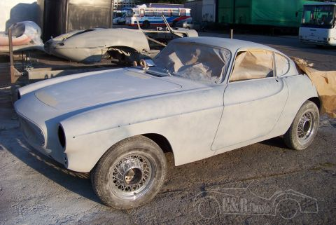
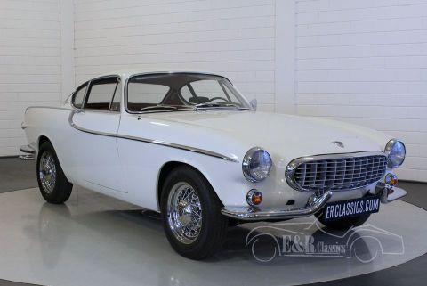
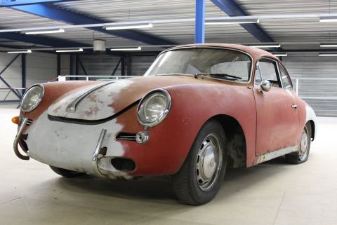
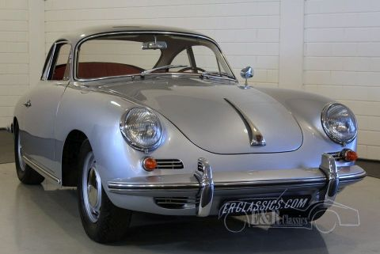
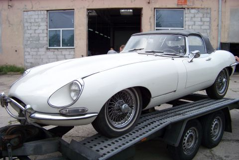
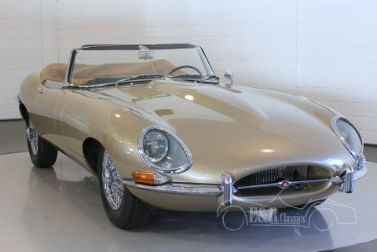
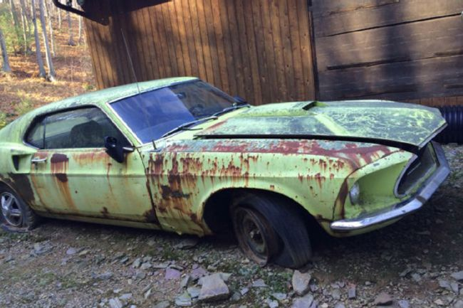
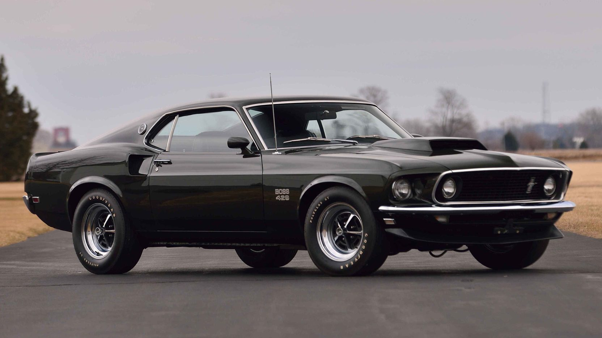

Overview
Manufacturer:
Volvo Cars
Production:
1961–1973
39,407 notch coupé
Assembly:
West Bromwich, England (Jensen Motors, 1961–1962)
Torslanda, Sweden (1963–1973)
Designer:
Pelle Petterson
Body and chassis :
Body style:
2-door coupe
3-door sports estate
Powertrain
Engine:
1,778 cc B18 I4
1,986 cc B20B/E/F I4
Dimensions
Wheelbase:
2,450 mm (96.5 in)
Length:
4,350–4,400 mm (171.3–173.2 in)
Width:
1,700 mm (66.9 in)


Overview
Manufacturer: Porsche AG
Production: 1963–present
Assembly: Stuttgart, Baden-Württemberg, Germany
Designer: Ferdinand Butzi Porsche (original design)
Body and chassis:
Body style 2-door coupé
2-door cabriolet
2-door Targa
Layout: Rear-engine, rear-wheel drive / four-wheel drive
Related Car:
Porsche 911 GT1
Porsche 911 GT2
Porsche 911 GT3
Porsche 912
Porsche Boxster
Porsche Carrera GT
Ruf RGT
Ruf CTR
Ruf CTR2
9ff GT9
Chronology
Predecessor Porsche 356


The first production open two-seater
a 1961 E-Type Series 1 3.8-Litre roadster.
Overview
Manufacturer: Jaguar Cars
Also called Jaguar XK-E
Jaguar V-12
Production: 1961–75
Assembly: Coventry, England
Designer: Malcolm Sayer
Body and chassis
Class: Sports car
Layout: FMR layout
Related: Jaguar D-Type
Jaguar XJ13
Chronology:
Predecessor Jaguar XK150
Successor Jaguar XJ-S


Overview
Manufacturer: Ford
Production: March 1964 – present
Model years: 1965–present
Designer: John Najjar
Philip T. Clark
Joe Oros
Gale Halderman
Body and chassis
Class: Pony car
Muscle car
Sports car
Body style:
2-door 2+2 seat coupé
2-door hatchback
2-door fastback
2-door convertible
Layout: FR layout